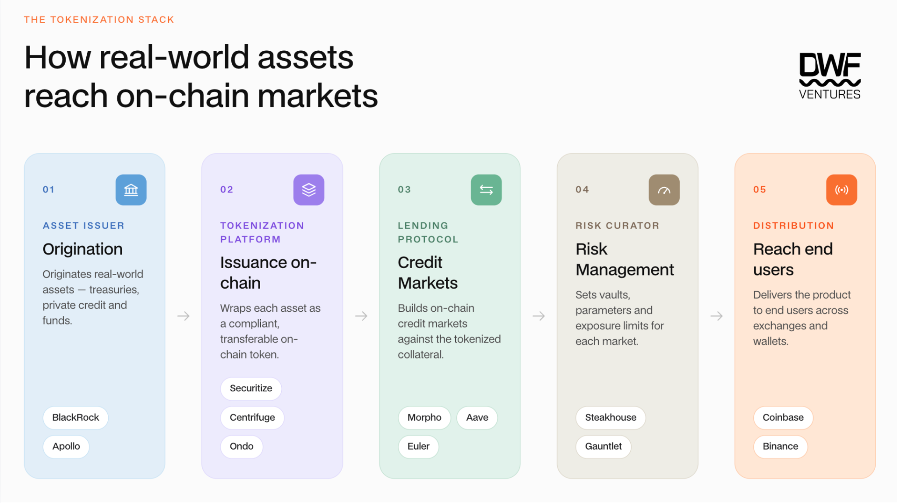
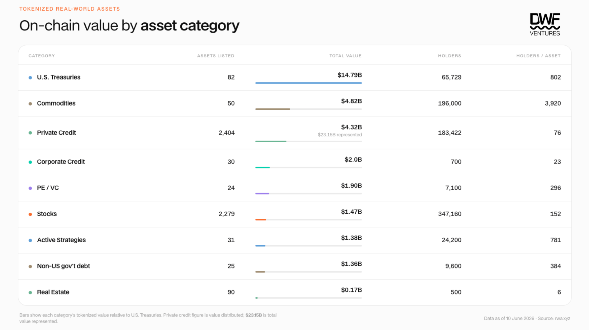
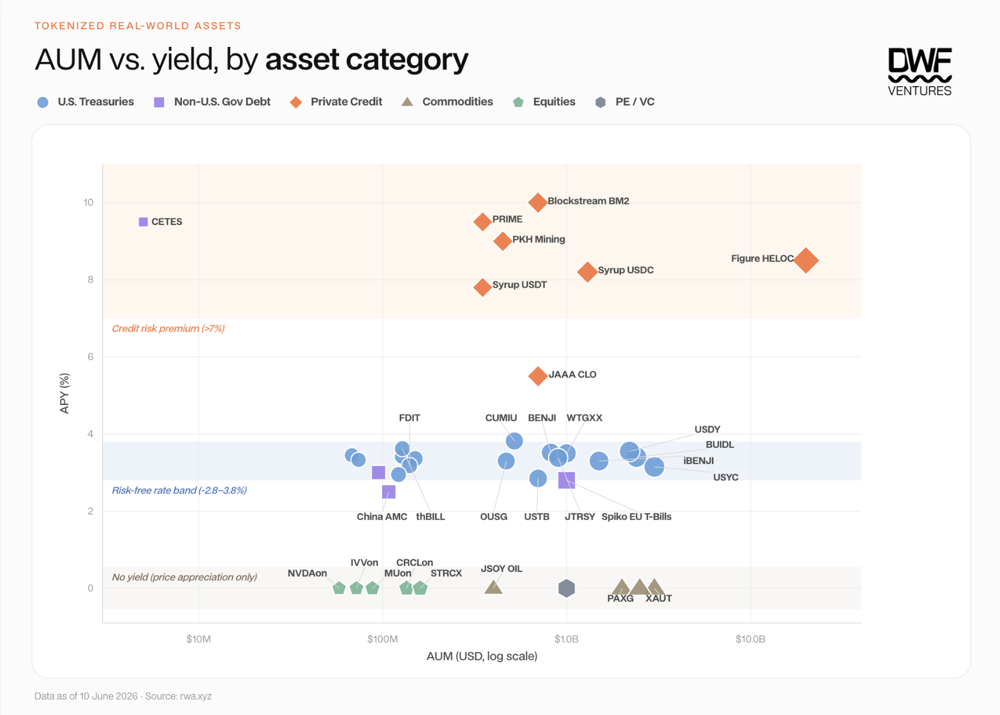

Key Takeaways:
Over $31B of tokenized assets sit on-chain, but only 10% sits in DeFi as active TVL. Most assets are simply minted and held in wallets for the long term, with little value flowing downstream towards protocols.
The growth of tokenized assets is a mix of new capital and crypto-native capital rotating to safer yields. Major stablecoins have grown to have significant exposure to T-bills in backing, while new wallet activity shows that tokenization is pulling in net new users.
Strong value can be unlocked for crypto infrastructure that can solve for gaps in risk, pricing, settlement or building an entirely vertically integrated stack from scratch.
94% of tokenized assets remain USD-denominated. There is huge upside for growth in emerging market sovereign bonds and regional private credit in MENA/APAC.
The tokenization wave has been accumulating over the past few years, accelerating in recent months as institutions commit serious capital on-chain. The premise of utilizing on-chain infrastructure is multifold — faster settlement, enhanced liquidity, 24/7 cross-border market access, composability, democratized access and transparency. As flows continue to increase, a key question emerges: who actually captures the value?
So far, the primary beneficiaries seem to be institutions rather than crypto-native companies that have been laying down the foundation. This report explores where value flows in the tokenization stack, the gaps in the market and how crypto infrastructure can step in to retain value.
The State of Tokenized Assets
The full on-chain tokenization stack consists of many players, each with their own role to play. Institutions operate across asset issuer and tokenization platforms, while lending protocols, risk curators and exchanges represent the crypto-native layer enabling broader distribution and utility.

The tokenization stack: from origination to distribution
In practice, most of the value remains siloed at the tokenized platform level. Some tokenized assets carry issuance/transfer restrictions, redemption delays or KYC requirements that are fundamentally incompatible with permissionless DeFi, limiting how far down the stack they can actually travel.
The total distributed value of tokenized assets on-chain (excluding stablecoins) has grown to over $31B, marking a 50% increase YTD. This growth has been driven by institutional capital entering the space, digitizing US Treasuries and private credit mainly.

On-chain value by asset category (Source: rwa.xyz)
While the total value of assets has grown significantly, we can see dispersion of holders and movement within asset categories. US treasuries and commodities lead the charge for the number of holders, while private credit and real estate remain slow in adoption. In terms of movement, most assets do not see much on-chain activity either. It is estimated that top US treasuries like BUIDL, WTGXX and BENJI have less than 30 transfers per month. This can be attributed to regulated access and availability of secondary liquidity affecting composability and utility within DeFi, which has a direct correlation to the number of holders. It is estimated that only around ~$3b of tokenized assets (10% of total value) sit in DeFi as active TVL, which are mostly in US treasuries and commodities. Nonetheless, this has provided significant value for RWA adjacent protocols beyond origination and issuance platforms — Sky, Morpho, Aave, Maple Finance and Pendle are generating good volume and revenue from these tokenized assets.
However, how much of the flows have actually come from net new capital? A large part of growth in US treasuries has been led by major protocols/DAOs diversifying their reserves and allocation strategy as yields in DeFi came down. Sky (formerly MakerDAO) was one of the earliest proponents of this use case, and currently still has over ~$1.5b allocated to tokenized funds such as BlackRock's BUIDL. Ethena recently allocated over $250m to Securitize's AAA CLO fund as part of USDe's backing. We can see the growth of such assets as crypto capital "fleeing to safety", but further analysis covers a greater picture.
A closer analysis of wallet activity done by Chainalysis showed that over ~400,000 RWA-holding addresses received their first RWA token within one week of wallet creation. These wallets have no prior crypto history, which is strong evidence of new capital entering. Meanwhile legacy wallets show greater participation in commodities and stocks, having had prior activity on-chain.
Infrastructure Gaps in the Market
The core value proposition of bringing assets on-chain has always been straightforward: programmable settlement, composable collateral, and continuous secondary markets. Asset classes that would benefit most from this include less liquid sectors like private credit and real estate. However, liquidity is often inversely correlated — the ones that stand to benefit the most have the least.
The problem of secondary liquidity can be distilled down into a few structural issues within the space: lack of proper pricing infrastructure, slow settlement of underlying assets, and KYC/accreditation regulations. All these culminate in low attractiveness and feasibility for tokenized assets within DeFi. As a result, there has been an emergence of potential solutions to the liquidity problem:
- Stablecoins as a collateralization layer: Enabling tokenized assets as collateral allows users to tap into yield while achieving deeper liquidity on-chain. This is essentially a wrapper mechanism, which has allowed less liquid assets like private credit to grow to a 64.3% DeFi utilization rate according to Pantera Capital's State of Tokenization report. Maple Finance has been very successful at this, with syrupUSDC and syrupUSDT garnering over $3.6b in TVL. However, exposure risk is high as users do not have control over allocation of assets and transparency/proof of reserves are subject to platform disclosures. Instances of defaults are non-zero and users will bear the brunt of any first losses.
- Improving pricing/oracle infrastructure: Private credit and real estate assets rely on periodic NAV updates which are daily at best, causing spreads to be wide as market makers cannot hedge risks efficiently enough to quote tightly on meaningful liquidity. This affects the LTV threshold for assets, which significantly eats into yields when applying looping strategies. Third party curators with expertise in allocation and risk management usually step in for lending platforms like Morpho and Euler, allowing spreads to become closer. Oracle providers like Pyth and Redstone are stepping in to fill this gap by serving a new 24/7 tokenized stocks and commodities market and verifiable real-time signals for pricing tokenized assets. This combined with proper asset risk scoring by third party agencies like Credora will significantly boost trust and asset composability, allowing market makers to price assets better and improve spreads on the underlying.
- Introducing new redemption mechanisms: Instant settlement is one of the key benefits that on-chain was supposed to bring. In reality, on-chain liquidity is insufficient for scale while OTC markets remain fragmented and closed off to non-institutions. Tokenized US treasuries that offer secondary markets such as Ondo's USDY see an average slippage of 0.2–0.3% even on just a $1,000 swap, meaning that users will still have to default to T+1/2 settlement for a proper exit. Symbiotic is solving this by building Liquid Lane — a shared vault infrastructure where market makers compete through an RFQ layer to price the redemption discount. This provides faster execution while reducing spreads on the assets. The vault infrastructure also allows for capital to be deployed in lending pool markets, bringing in additional streams of yields for LPs.
- Vertical integration of the stack in one platform: Most tokenized asset issuers depend on external NAV administrators, third-party oracles, and separate trading venues to price and move their assets. Figure is the exact opposite of this as it controls all three layers in-house: origination (over $21B in HELOCs originated on Provenance Blockchain), secondary price discovery (Democratized Prime, a Dutch auction marketplace), and a native settlement currency (YLDS, the first SEC-registered yield-bearing stablecoin). It has an edge in pricing due to first-party data on borrower creditworthiness, LTV ratios and delinquency rates. Figure is now extending this model through Forge — opening the origination-to-settlement pipeline to underserved asset classes such as real estate equity, auto loans and trade financing, which could lead to a boom in new markets.
The Next Big Opportunity
Analyzing the current AUM of tokenized assets on-chain vs. yield filtered by asset category shows big opportunity in certain sectors. The chart below shows demand across three different tiers of yield profile:
- Credit risk premium (>7%): Private credit dominates with yield that remains scalable alongside AUM through having a vertically integrated stack (Figure HELOC) or leveraging in DeFi (syrupUSDC/USDT).
- Risk-free rates (3–4%): Highly commoditized yields, mainly competing on distribution and composability.
- No yield (0%): Assets with strong demand on their own, where on-chain provides access to price exposure.

AUM vs. yield, by asset category (Source: rwa.xyz)
We believe the next big opportunity lies in two big categories: non-USD denominated private credit/bonds, and enabling on-chain yield on commodities/equities.
Over 94% of tokenized assets are USD-denominated and even within the remaining 6%, over three-quarters sit in Spiko's Euro T-bills fund. This is a big contrast to traditional fixed income, where non-USD sovereign bonds account for over 45% of the global market. Emerging market sovereign debt is where the yield case is strongest — Brazilian real-denominated government bonds yield ~10%, Turkish lira bonds ~15%. While there is depreciation risk, instruments such as non-deliverable forwards (NDFs) allow for hedging. Regional private credit is also heating up, especially in the MENA and APAC region, and we expect to see much more growth from there.
Being on-chain transforms traditionally passive assets into productive collateral. Tokenized commodities have proven demand, generating over $4.8B on-chain with $90.7B in Q1 2026. Tokenized equities are following the same trajectory with the market growing to over $1B and 185k holders in a year. An opportunity lies for any protocol that can layer yield onto these assets at scale, through usage as collateral for stablecoins, lending markets or even options. The reward is substantial as distribution is effectively pre-built through exchanges already listing them, and introducing the stickiness of yield-bearing positions versus bare price exposure means the protocol that cracks this first can capture long-term holders — which will accrue strong value in the long run.
How We See the Market
Overall, tokenization is good for crypto by bringing real assets on-chain, as long as there is actual liquidity to back it. While institutions and market makers play a large part and capture most value today, the value will gradually flow towards crypto-native platforms that unlock better pricing, yields and utility. Much of this infrastructure is already being built, and we are excited to see progress in the coming months.